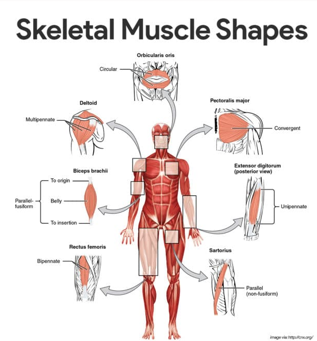
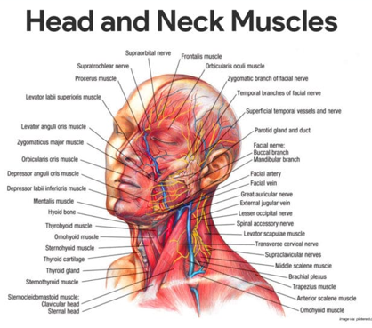

• Thick filaments. The larger, thick filaments, also called myosin filaments, are made mostly of bundled molecules of the protein myosin, but they also contain ATPase enzymes, which split ATP to generate the power for muscle contraction.
• Cross bridges. Notice that the midparts of the thick filaments are smooth, but their ends are studded with thick projections; these projections, or myosin beads, are called cross bridges when they link the thick and thin filaments together during contraction.
• Thin filaments. The thin filaments are composed of the contractile protein called actin, plus some regulatory proteins that play a role in allowing (or preventing) myosin-bead binding to actin; the thin filaments, also called actin filaments, are anchored to the Z disc (a disclike membrane).
• Sarcoplasmic reticulum. Another very important muscle fiber organelle is the sarcoplasmic reticulum, a specialized smooth endoplasmic reticulum; the interconnecting tubules and sacs of the SR surround each and every myofibril just as the sleeve of a loosely crocheted sweater surrounds your arm, and its major role is to store calcium and to release it on demand.
Muscle Movements, Types, and Names
This section is a bit of a hodge-podge. It includes some topics that don’t really fit together, but they don’t fit anywhere else any better.
Types of Body Movements
Every one of our 600-odd skeletal muscles is attached to bone, or to other connective tissue structures, at no fewer than two points.
• Origin. One of these points, the origin, is attached to the immovable or less movable bone.
• Insertion. The insertion is attached to the movable bone, and when the muscle contracts, the insertion moves toward the origin.
• Flexion. Flexion is a movement, generally in the sagittal plane, that decrease the angle of the joint and brings two bones closer together; it is a type of hinge joints, but it is also common at ball-and-socket joints.
• Extension. Extension is the opposite of flexion, so it is a movement that increases the angle, or the distance, between two bones or parts of the body.
• Rotation. Rotation is movement of a bone around a longitudinal axis; it is a common movement of ball-and-socket joints.
• Abduction. Abduction is moving the limb away from the midline, or median plane, of the body.
• Adduction. Adduction is the opposite of abduction, so it is the movement of a limb toward the body midline.
• Circumduction. Circumduction is a combination of flexion, extension, abduction, and adduction commonly seen in ball-and-socket joints; the proximal end is stationary, and its distal end moves in a circle.
Special Movements
Certain movements do not fit into any of the previous categories and occur at only a few joints.
• Dorsiflexion and plantar flexion. Lifting the foot so that its superior surface approaches the shin is called dorsiflexion, whereas depressing the foot is called plantar flexion.
• Inversion and eversion. To invert the foot, turn the sole medially; to evert the foot, turn the sole laterally.
• Supination and pronation. Supination occurs when the forearm rotates laterally so that the palm faces anteriorly and the radius and ulna are parallel; pronation occurs when the forearm rotates medially so that the palm faces posteriorly.Opposition. In the palm of the hand, the saddle joint between metacarpal 1 and the carpals allows opposition of the thumb
.
Interactions of Skeletal Muscles in the Body
Muscles are arranged in such a way that whatever one muscle can do, other muscles can reverse. Because of this, muscles are able to bring about an immense variety of movements.
• Prime mover. The muscle that has the major responsibility for causing a particular movement is called the prime mover.
• Antagonists. Muscles that oppose or reverse a movement are antagonists; when a prime mover is active, its antagonist is stretched and relaxed.
• Synergists. Synergists help prime movers by producing the same movement or by reducing undesirable movements.
• Fixators. Fixators are specialized synergists; they hold a bone still or stabilize the origin of a prime mover so all tension can be used to move the insertion bone.
Naming Skeletal Muscles
Like bones, muscles come in many shapes and sizes to suit their particular tasks in the body.
• Direction of the muscle fibers. When a muscle’s name includes the term rectus (straight) its fibers run parallel to that imaginary line; the term oblique as part of a muscle’s name tells you that the muscle fibers run obliquely (at a slant) to the imaginary line.
• Relative size of the muscle. Such terms as maximus (largest) , minimus (smallest), and longus (long) are often used in the names of muscles.
• Location of the muscle. Some muscles are named for the bone with which they are associated; for example, the temporalis and frontalis muscles overlie the temporal and frontal bones of the skull.
• Number of origins. When the term biceps, triceps, or quadriceps forms part of a muscle name, one can assume that the muscle has two, three, or four origins.
• Location of the muscle’s origin and insertion. Occasionally, muscles are named for their attachment sites.
• Shape of the muscle. Some muscles have a distinctive shape that helps to identify them.

• Action of the muscle. When muscles are named for their actions, terms such as flexor, extensor, and adductor appear in their names.
Arrangement of clesFasci
Skeletal muscles consists of fascicles, but fascicle arrangement vary, producing muscles with different structures and functional properties.
• Circular. The pattern is circular when the fascicles are arranged in concentric rings; circular muscles are typically found surrounding external body openings which they close by contracting.
• Convergent. In convergent muscle, the fascicles converge toward a single insertion tendon; such a muscle is triangular or fan-shaped.
• Parallel. In a parallel arrangement, the length of the fascicles run parallel to the long axis of the muscle; these muscles are straplike; a modification of the parallel arrangement, called fusiform, results in a spindle-shaped muscle with an expanded belly.
• Pennate. In a pennate pattern, short fascicles attach obliquely to a central tendon; in the extensor digitorium muscle of the leg, the fascicles insert into only one side of the tendon and the muscle is unipennate; if the fascicles insert into opposite sides of the tendon or from from several different sides, the muscle is bipennate or multipennate.
Gross Anatomy of Skeletal Muscles
Only the most important muscles are described here because it is beyond our scope to describe the hundreds of skeletal muscles of the human body.
Head and Neck Muscles
The head muscles are an interesting group because they have many specific functions but are usually grouped into two large categories- facial muscles and chewing muscles

Facial Muscles
There are 5 facial muscles:
• Frontalis. The frontalis, which covers the frontal bone, runs from the cranial aponeurosis to the skin of the eyebrows, where it inserts; this muscle allows you to raise your eyebrows and wrinkle your forehead; at the posterior end of the cranial aponeurosis is the small occipitalis muscle.
• Orbicularis occuli. The orbicularis oculi has fibers that run in circles around the eyes; it allows you to close your eyes, squint, blink, and wink.
• Orbicularis oris. The orbicularis oris is the circular muscle of the lips; because it closes the mouth and protrudes the lips, it is often called the “kissing” muscle.
• Buccinator. The fleshy buccinator muscle runs horizontally across the cheek and inserts into the orbicularis oris.
• Zygomaticus. The zygomaticus extends from the corner of the mouth to the cheekbone; it is often referred to as the “smiling” muscle because it raises the corners of the mouth upward.
Chewing Muscles
The buccinator muscle, which is a member of this group, is described with the facial muscles.
• Masseter. As it runs from the zygomatic process of the temporal bone to the mandible, the masseter covers the angle of the lower jaw; this muscle closes the jaw by elevating the mandible.
• Temporalis. The temporalis is a fan-shaped muscle overlying the temporal bone; it inserts into the mandible and acts as a synergist of the masseter in closing the jaw.
Neck Muscles
For the most part, the neck muscles, which move the head and shoulder girdle, are small and straplike. Only two neck muscles are considered here.
• Platysma. The platysma is a single, sheetlike muscle that covers the anterolateral neck; its action is to pull the corners of the mouth inferiorly, producing a downward sag of the mouth.
• Sternocleidomastoid. The paired sternocleidomastoid muscles are two-headed muscles, one found on each side of the neck; when both sternocleidomastoid contract together, they flex your neck.
Trunk Muscles
The trunk muscles include (1) those that move the vertebral column; (2) anterior thorax muscles, which move the ribs, head, and arms; and (3) muscles of the abdominal wall, which help to move the vertebral column and, most important, form the muscular “natural girdle” of the abdominal body wall.
Anterior Muscles
The anterior muscles of the trunk include:
• Pectoralis major. The pectoralis major is a large, fan-shaped muscle covering the upper part of the chest; this muscle forms the anterior wall of the axilla and acts to adduct and flex the arm.
• Intercostal muscles. The intercostal muscles are deep muscles found between the ribs; the external intercostals are important in breathing because they help you to raise the rib cage when you inhale; the internal intercostals, which lie deep to the external intercostals, depress the rib cage, which helps to move air out of the lungs when you exhale forcibly.
• Muscles of the abdominal girdle. The anterior abdominal muscles (rectus abdominis, ecternal and internal obliques, and transversus abdominis) form a “natural girdle” that reinforces the body trunk; the paired straplike rectus abdominis muscles are the most superficial muscles of the abdomen; the external oblique muscles are paired superficial muscles that make up the lateral walls of the abdomen; the internal oblique muscles are paired muscles deep to the external obliques; and the transversus abdominis is the deepest muscle of the abdominal wall and has fibers that run horizontally across the abdomen.
Posterior Muscles
The posterior muscles of the trunk include:
• Trapezius. The trapezius muscles are the most superficial muscles of the posterior neck and upper trunk; the trapezius muscles extend the head; they also can elevate, depress, adduct, and stabilize the scapula.
• Latissimus dorsi. The latissimus dorsi muscles are the two large, flat muscles that cover the lower back; these are very important muscles when the arm must be brought down in a power stroke.
• Erector spinae. The erector spinae group is the prime mover of back extension; these muscles not only act as powerful back extensors but also provide resistance that helps control the action of bending over at the waist.
• Quadratus lumborum. The fleshy quadratus lumborum muscles form part of the posterior abdominal wall; acting separately, each muscle of the pair flexes the spine laterally; acting together, they extend the lumbar spine.
• Deltoid. The deltoids are fleshy, triangle-shaped muscles that form the rounded shape of the shoulders; the deltoids are the prime movers of arm abduction.
Muscles of the Upper Limb
The upper limb muscles fall into three groups. The first group arise from the shoulder girdle and cross the shoulder joint to insert into the humerus. The second group causes movement at the elbow joint. The third group includes the muscles of the forearm.
Muscles of the Humerus that Act on the Forearm
All anterior arm muscles cause elbow flexion. In order of decreasing strength, these are the brachialis, biceps brachii, and brachioradialis.
• Biceps brachii. The biceps brachii is the most familiar muscle of the arm because it bulges when the elbow is flexed; this muscle is the powerful prime mover for flexion of the forearm and acts to supinate the forearm.
• Brachialis. The brachialis lies deep to the biceps muscle and is as important as the biceps in the elbow portion; the brachialis lifts the ulna as as the biceps lift the radius.
• Brachioradialis. The brachioradialis is a fairly weak muscle that arises on the humerus and inserts into the distal forearm.
• Triceps brachii. The triceps brachii is the only muscle fleshing out the posterior humerus; being the powerful prime mover of elbow extension, it is the antagonist of biceps brachii.
Muscles of the Lower Limb
Muscles that act on the lower limb cause movement at the hip, knee and foot joints. They are among the largest and strongest muscle in the body and are specialized for walking and balancing the body.
Muscles Causing Movement at the Hip Joint
Part of the muscles of the lower limb are the muscles at the hip joint.
• Gluteus maximus. The gluteus maximus is a superficial muscle of the hip that forms most of the flesh of the buttock; it is a powerful hip extensor that acts to bring the thigh in a straight line with the pelvis.
• Gluteus medius. The gluteus medius runs from the iliac to the femur, beneath the gluteus maximus for most of its length; the gluteus medius is a hip abductor and is important in steadying the pelvis during walking.
• Iliopsoas. The iliopsoas is a fused muscle composed of two muscles, the iliacus and the psoas major; it is a prime mover of hip flexion and also acts to keep the upper body from falling backward when we are standing erect.
• Adductor muscles. The muscles of the adductor group form the muscle mass at the medial side of each thigh; as their name indicates, they adduct, or press, the thighs together.
Muscles Causing Movement at the Knee Joint
The muscles of the lower limb that causes movement of the knee joint are:
• Hamstring group. The muscles forming the muscle mass of the posterior thigh are the hamstrings; the group consists of three muscles, the biceps femoris, semimembranosus, and semitendinosus, which originate on the ischial tuberosity and run down the thigh to insert on both sides of the proximal tibia.
• Sartorius. It is the most superficial muscle of the thigh; it acts as a synergist to bring about the cross-legged position.
• Quadriceps group. The quadriceps group consists of four muscles- the rectus femoris muscle and three vastus muscles– that flesh out the anterior thigh; the group as a whole acts to extend the knee powerfully.
Muscles Causing Movement at the Ankle and Foot
There are 5 muscles that cause movement at the ankle and foot:
• Tibialis anterior. The tibialis anterior is a superficial muscle on the anterior leg; it arises from the upper tibia and then parallels the anterior crest as it runs to the tarsal bones.
• Extensor digitorum longus. Lateral to the tibialis anterior, the extensor digitorum longus muscle arises from the lateral tibial condyle and proximal radius; it is a prime mover of toe extension and a dorsiflexor of the foot.
• Fibularis muscles. The three fibularis muscles- longus, brevis, and tertius- are found on the lateral part of the leg; the group as a whole plantar flexes and everts the foot.
• Gastrocnemius. The gastrocnemius muscle is a two-bellied muscle that forms the curved half of the posterior leg; it is a prime mover for plantar flexion of the foot.
• Soleus. Deep to the gastrocnemius is the fleshy soleus muscle; because it arises from the tibia and fibula, it does not affect knee movement.
Physiology of the Muscular System
Skeletal Muscle Activity
Muscle cells have some special functional properties that enable them to perform their duties.
Nerve Stimulus and the Action Potential
To contract, skeletal muscle cells must be stimulated by nerve impulse.
• Neurotransmitter. When a nerve impulse reaches the axon terminals, a chemical referred to as the neurotransmitter is released; the specific neurotransmitter that stimulate skeletal muscle cells is acetylcholine, or ACh.
• Temporary permeability. If enough acetylcholine is released, the sarcolemma at that point becomes temporarily more permeable sodium ions, which rush into the muscle cell, and to potassium ions, which diffuse out of the cell.
• Action potential. More channels in the sarcolemma open up to allow only sodium to enter, which generates an electrical current called an action potential; once the action is begun, it is unstoppable; it travels over the entire surface of the sarcolemma, conducting the electrical impulse from one end of the cell to the other; the result id contraction of the muscle cell.
• Break down of enzymes. Acetylcholine, which began the process of muscle contraction, is broken down to acetic acid and choline by enzymes present on the sarcolemma; for this reason, a single nerve impulse produces only one contraction; the muscle cell relaxes until stimulated by the next round of acetylcholine release.
Mechanism of Muscle Contraction: The Sliding Filament Theory
When muscle fibers are activated by the nervous system, the myosin heads attach to binding sites on the thin filaments, and the sliding begins.
• Relaxed muscle cell. In a relaxed muscle cell, the regulatory proteins forming part of the actin myofilaments prevent myosin binding; when an action potential sweeps along its sarcolemma and a muscle cell is excited, calcium ions are released from intracellular storage areas.
• Contraction trigger. The flood of calcium acts as the final trigger for contraction, because as calcium binds to the regulatory proteins on the actin filaments, they change both their shape and their position on the thin filaments.
• Attachment. The physical attachment of myosin to actin “springs the trap”, causing the myosin heads to snap toward the center of the sarcomere; because actin and myosin are firmly bound to each other when this happens, the thin filaments are slightly pulled toward the center of the sarcomere.